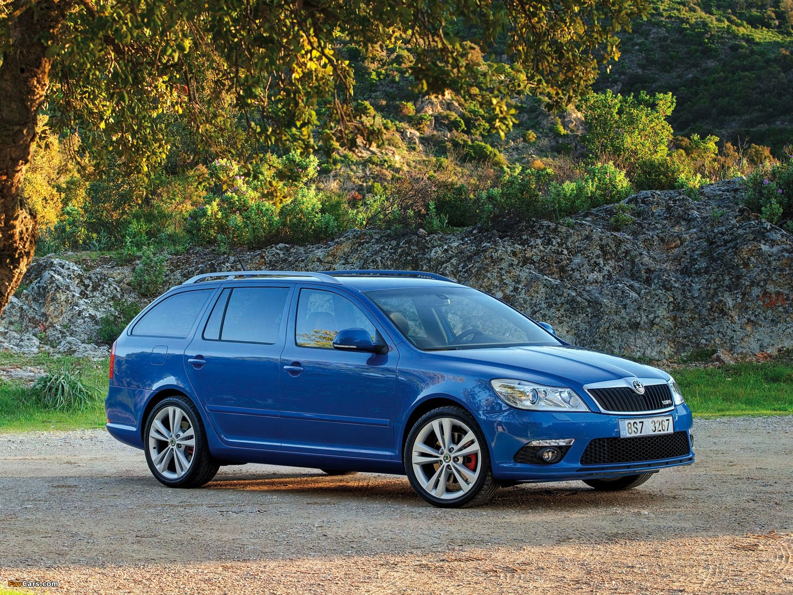

Škoda Octavia 2 RS
Technické specifikace:
- Motor: 2.0 TDI, 4 válce
- Výkon: 170 koní (125 kW)
- Zrychlení 0-100 km/h: 8.0 sekundy
- Maximální rychlost: 225 km/h
- Spotřeba: 6.0 l/100 km
- Cena: 500 000 CZK
Vybavení:
- Sportovní podvozek
- Vyhřívaná sedadla
- Automatická klimatizace
- Parkovací senzory
- Bluetooth hands-free
Škoda Octavia 2 RS je skvélé kombinuje výkon a praktičnost pro rodiny i náročné řidiče, kteří hledají dynamickou jízdu.